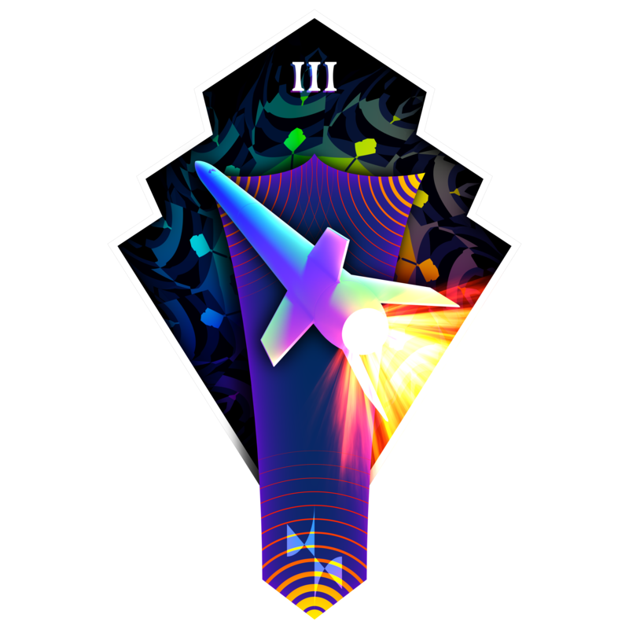

15/02/2024 - by Sami
ⓘ Published as part of a sponsorship arrangement with RS Components

At StrathSEDS, we are looking to design and build a 2-stage rocket that will compete in the Mach-24
rocketry competition held in July. Our mission, 'Clyde-o-scope', will see our rocket, Strathosphere
III, lift off with a goal of reaching 3km. Not only are we competing to achieve an altitude target,
but the rocket will also be equipped with a >1kg CanSat which is being designed to measure altitude
using the speed of sound. Our plan is to use a two-stage recovery system on the launch vehicle (LV)
to minimise drift from the launch site and furthermore, we are hoping to show a livestream from the
LV during flight.
We have further goals within the society for this project and this includes using recycled plastics for 3D-printed components, relaying live telemetry data as well as video feeds to Twitch and using edge machine learning to analyse video footage from the LV to learn about flexural-torsional flutter for future missions. We are determined to make this project a success as it shows growth within the society. Our project team is split into 3 sub-teams: mechanical, electrical, and coding. Each team plays a crucial role in the development of our rockets. We have taken part in various competitions in the past with various amounts of success but consistently competing to a high level sets a good benchmark for how we want the society to be seen within the community. Through a wider lens, our objectives are more long-term. What this means is that we wish to help produce the next generation of rocket engineers. The rockets we design are entirely student led and we believe this to be a core principle of the society. Inclusivity and diversity are big parts of our identity and collaboration as well; we are not just comprised of traditional engineers, but we believe no matter your background, you can help contribute to the team.
We are determined to make this project a success as it shows growth within the society. Our project team is split into 3 sub-teams: mechanical, electrical, and coding. Each team plays a crucial role in the development of our rockets. We have taken part in various competitions in the past with various amounts of success but consistently competing to a high level sets a good benchmark for how we want the society to be seen within the community. Through a wider lens, our objectives are more long-term. What this means is that we wish to help produce the next generation of rocket engineers. The rockets we design are entirely student led and we believe this to be a core principle of the society. Inclusivity and diversity are big parts of our identity and collaboration as well; we are not just comprised of traditional engineers, but we believe no matter your background, you can help contribute to the team.
The University of Strathclyde is already renowned for producing top engineering talents but the students in our society are given an edge due to their hands-on experience with all aspects of rocketry design. All our sub teams work together under the same roof encouraging conversations to take place between them. We believe word of mouth to be one of the strongest tools at our disposal and teaching the students to talk to each other to solve problems is key. This type of experience is harder to obtain from just the university course alone.
Our society is already recognised by the University for having great prestige and we have multiple ties with outside international corporations. This year, we partnered with ANSYS who are well-known for their expertise in software simulation partnering with many Formula 1 teams and now helping us to simulate the aerodynamic effects on our rocket. Ultimately, the industry is only as good as the people in it and we aim to prepare our members for this to the best of our abilities
As we look to expand our aspirations, we will also be looking to enter a secondary rocketry competition, the National Rockery Championship (NRC). We are hoping to return to this competition for the first time in over a decade as we look to grow as a society. This competition allows more junior members of the society to design and build rocket parts and we wish to facilitate all our members goals. Our rocket for this competition will aim to reach an altitude of 762m and upon parachute deployment, will measure the load forces in the parachute lines.
The mechanical team is currently working on the main systems for our two LV’s. This includes a system of mirrors contained within the avionics bay to facilitate the camera for livestreaming fin during launch whilst having minimal impact on the vehicles aerodynamic performance. To minimise the aerodynamic impact, the shroud around the mirrors is designed to the profile of an aerofoil.
We have also handmade our nosecones out of hand-laid-up fiberglass to great success. Using the composites lab within the James Wier building on Strathclyde campus, we hand laid the nosecone for Strathosphere II, using chopped strand mat fiberglass and a 3D printed tip.
The goal of live streaming video was inspired by footage from last year's launch of Strathosphere II launch, the rocket had a camera situated in a specially designed boattail to reduce the base drag on the vehicle. We will be putting another boattail on Strathosphere III for the same reason, this time with a more bespoke retention system.
The electrical team is currently working on three main projects. Our first, is our primary high quality flight computer program, called Firefly. The second is our tiny and feature packed altimeter, Firefly mini. Finally, is our livestreamed video system. This comes in two parts, a transmitter on the rocket and an automatically tracking receiver system.
To reduce human error in tracking the vehicle after launch, we are also designing a tracking ground station in conjunction with the electrical team. This will rotate with the antenna in the ground using stepper motors and planetary gears.
Firefly 1.1 is the latest generation of our Firefly flight computers incorporating top tier sensors, including GPS, redundant pressure, 9 Degrees of Freedom IMU. It also includes pyrotechnic control, with two outputs. These have both high side and low side switching for maximum reliability. To this end, we’ve also included break-wire launch detection to maximise the chance of a correct launch detection, even despite multiple sensor failures. It also includes a lora 868 radio for telemetry. We’ve had excellent results with this system previously, with previous tests receiving packets from over 4km with line of sight, and over a mile when passing over a large hill.
Our payload for the CanSat will incorporate an acoustic altitude measurement system. With a speaker and two spaced microphones, we can measure the speed of sound, and with the temperature we can find the rough altitude. These signals will be filtered and processed with a secondary microcontroller included just for this task, with both digital and analogue processing techniques to clean up the input. We’re expecting to get a precision of about 100m, not the best but an interesting way to get it!
Firefly Mini is an incredibly feature dense altimeter. It has a radio, GPS, 9DoF IMU, and pressure sensor in an incredibly small 30x50mm footprint. We have also added an expansion port, which will interface with our payload board. For NRC we are using this capability for measurement of the load of parachute deployment. We are also working on a pyrotechnic expansion.
Last but not least, is our live-streamed video project. We will be taking a video stream of the fins during flight, compressing it using an Okdo 4c+, transmitting it over a 2.4GHz LoRa link and receiving it with a tracking ground station with high gain antenna. A lot of work is being done to accomplish this, and we’re looking forward to seeing the results.
The coding team is working to build versatile and robust firmware for our flight computers as well as reliable end-to-end telemetry and flight tracking solutions. We utilise and train our members in cutting-edge technologies like Rust as well as prominent industry tools like Firebase and Next.js. Our innovating approach provides members a chance to engage with a wide array of novel projects; often with opportunities to impact the rocketry community by publishing new libraries and upstreaming code to open-source projects.
Our Rust-based flight computer firmware boasts the capability to process feeds from 8 on-board sensors, including a link to our digital signal coprocessor which will be used to test a novel altitude sensing mechanism. This data is transmitted to our ground station which distributes the data to our app which will aid the recovery team in locating the launch vehicle and payload.
Our focus this year is on developing a system to obtain a live video feed from the launch vehicle which we will use to analyse fin flutter. This involves an assortment of projects: from a Linux-based transmitter and edge machine vision device, a tracking antenna to closely follow the launch vehicle’s trajectory and a dashboard to visualise and livestream the feed.
This ambitious system will permit our members to acquire experience and skills in several sought-after fields: real-time control systems, embedded development, video compression and machine vision, as well as strengthening cross-discipline collaborative skills.
Sourcing a diverse array of electronic components from RS is a position we are fortunate enough to be in and we believe this ensures the quality and reliability of our products. RS's reputation for excellence makes them a trusted supplier for many products we will look to purchase such as: antennas, wires, and connectors. We will also look for equipment such as soldering supplies, batteries, and testing apparatus, all of which are vital for our manufacturing process. RS provides access to a wide range of high-quality components essential to our rocket’s functionality and performance. This collaboration has streamlined our procurement process and instils us with confidence for the consistency and performance of our final designs and product.
Looking to the future, we will continue to work on Strathosphere III. The parts that will be provided by RS will be a massive aid in turning our dreams into reality. There will be several challenges as we are still restricted by the budget we are working with. We are also restricted by the amount of time we have until launch. Being university students, we cannot dedicate all our time to the mission as this has to be balanced with coursework and personal lives.
We are a positive group of people; we believe in the talent that we have within the society and that the future is still to be written. Success for us looks like T-0, and our rocket launching with each of the components working as it should. Success is the improvements we can take from this into next year's design. Success is everyone within the society feeling a sense of pride in what they do.